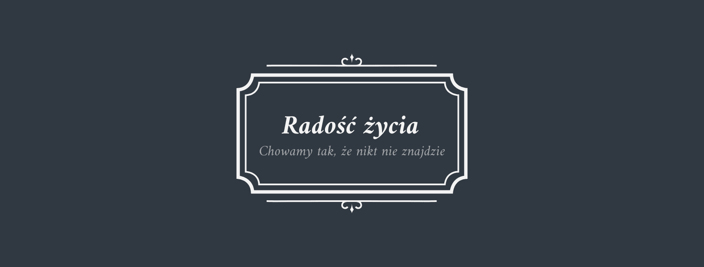
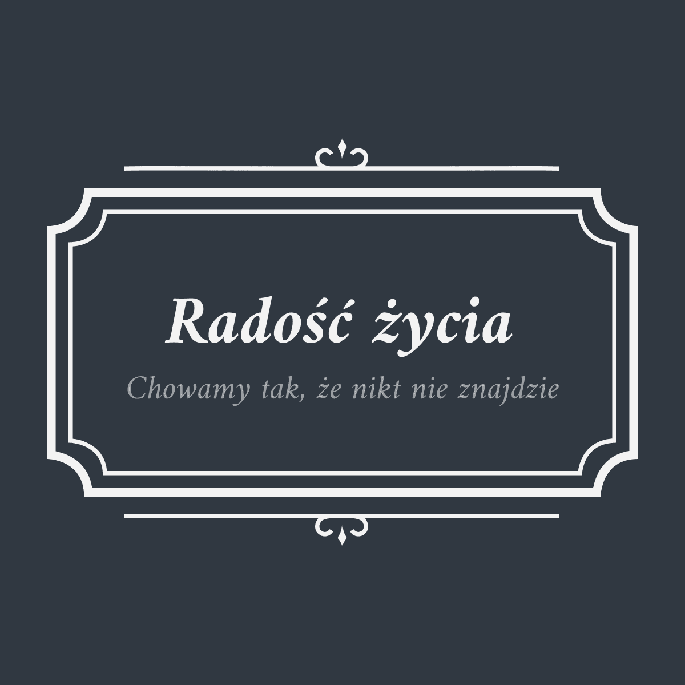

Oferta zakładu pogrzebowego
Oferujemy państwu najwyższej jakości:
Urny,
Nagrobki,
Wieńce pogrzebowe,
Zdrowe eko-Trumny (100% drewna)
Mamy również idealną ofertę dla par. Dwa pogrzeby w cenie jednego*
Oferujemy też wykonanie biżuterii na zamówienie. Chcecie dać swojej kobiecie pierścionek z diamentem zrobionym z teściowej? Żaden problem!
PROMOCJA!
Trzynastego wszystko zdarzyć się może!
Trzynastego urny w każdym kolorze!
*Oferta przeznaczona wyłącznie dla ludzi niskich.
Godziny otwarcia
Nie znasz dnia ani godziny.
W zasadzie my też nie...
Dlatego nasz zakład otwarty jest:
Poniedziałek
|06
00
- 23
30
|
Wtorek
|06
20
- 23
45
|
Środa
|06
00
- 23
30
|
Czwartek
|00
00
- 23
15
|
Piątek
|05
15
- 00
00
|
Sobota
|06
00
- 23
30
|
Niedziela
|07
00
- 23
30
|
A dodatkowo nasi konsultanci są dla Państwa dostępni 24 godziny, 7 dni w tygodniu.
Dane adresowe
Radość Życia
Sp. z.o.o.
Adres: ul. Popielna 66/a6, 32-600 Oświęcim
Numer kontaktowy: +48 787-604-599
O nas
Firma "Radość życia" świadczy profesjonalne i kompleksowe usługi pogrzebowe. Organizujemy pogrzeby katolickie, ewangelickie, świeckie oraz inne.
Do klientów podchodzimy z należytym szacunkiem. Niestety z racji wykonywanego zawodu atmosfera jest u nas dość... sztywna.
Jak to powiedziała kiedyś nasza szefowa
Pamiętajcie, żeby nie gnić w domu.
Krótka ankieta!
Podobała się państwu nasza strona?
Tak
Nie
Zapisz się do naszego newslettera!
Zapisz się!
Autor

Cyryl Kałuża | © Wszelkie prawa zastrzeżone | cyrylmarian.kaluza@hotmail.com